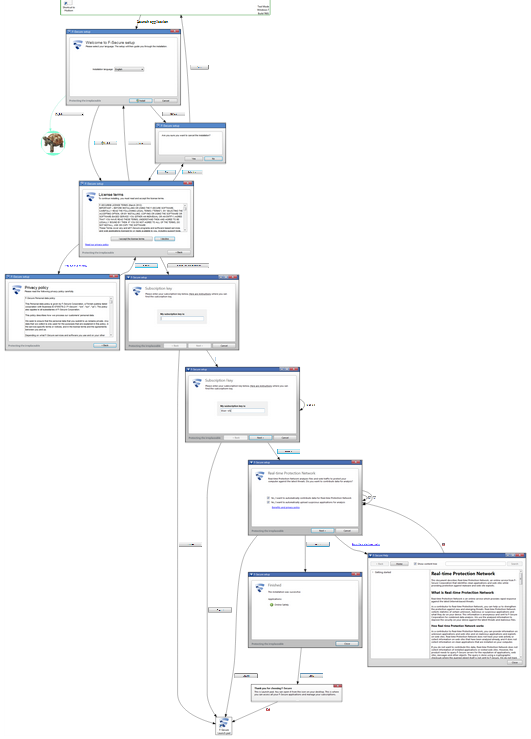

The why's and ways of murphy

The scenario
Let's take a real life example of one of the applications I worked with, and for simplification purposes it is only the installation flow.
One of my tasks as a QE & Software developer is to actually test the application, the nice graph at the right of the page is not something
I was provided with.
Things to consider are that the application is translated to around 30 languages, so the UI text changes, also the user interface is customized
for different customers with logos, colors, fonts, etc. Also we work in continuous integration and new builds and versions arrive many times
per day.
The challenge
To begin with and without going deep into technical details, creating test automation in many cases means writting test scripts that excercise the application, let's
just keep it present that whatever I test is whatever I assert, if i don't assert something, well... i'm not testing it...
We already can see from the picture that there are 10 dialogs (or 11 depending on how you count them), each dialog has certain actions that the user can do
and also text (that should be different in different languages)
A quick estimation by proofreading the graph is that there are over 30 elements to assert spread over 10 dialogs and about 20 state transitions
(again, is an approximation, you may decide that certain elements are not worth being asserted).
If we decide to include support for each language in the testing, then those 30 elements become 900!
There are several different ways to write down some test scripts, each of them will vary the amount of code to be written (or manual actions if I decide to use
some 'record and playback' tool), invariably any code oriented tool will require quite a lot of writting.
You could 'cut some corners', let say we could not check labels, or we could skip some dialogs, but then again, anything we dont test we risk releasing a bug
without knowing (no assert means no test!).
Even at this point we can realize that the testing code may be rather trivial, but not short, and the problem is not so much about writting it but we have
to then MAINTAIN it! (remember, I get many versions of the application per day!), no matter how much you struggle, every line of code you write has an associated
maintenance cost.
Writting and maintain up to date those test scripts (which they start failing at any visible change in the application) is an excercise in futility, it is akin of playing
whac-a-mole from a QE perspective, and if you decide that the test scripts should be done before commiting code you're only moving the pain from the knee to the elbow, quite ofthen you'd have
an army of developers being backed by a (few) QE / tester(s) and this is ONLY the installer, you have then the application flow, the uninstallation flow
and many other things included in the package.
The murphy way
Do not write the tests, instead generate them.
The given graph was generated with murphy with very little code, in esence the model extraction script for this scenario boils down to:
- launch the application
- explore
- if in subscription key dialog, prefill a subscription key
- if in help dialog, do not explore this dialog, close it instead
In fact, from the bullet list, only the 2 last points needs some coding (the rest is provided by murphy) and it is quite simple code. Side by side with a
more traditional approach of test automation murphy reduces test code writting to the bare minimum.
Running the model extraction script will generate the graph along with a model, at this point there are no assertions at all, so we cant claim we're testing... yet,
but the fact that you look at the graph is testing itself, testing at the speed of thought.
After verifying what the application behaviour is we take this model as a reference, create any bug report we can find by visual inspection and so on.
When a new version of the application is compiled, the new model is extracted and automatically compared against the previous version, it then generates a report with the
differences found between the versions, there may be at this point the need for adjust the extraction script (most changes wont, but that's very dependant on the new features being
introduced, bugs being fixed and so.)
However...
You'll still need to create test cases manually (hopefully the interesting ones), murphy tries to cover the tedious and basics (at the moment) and be a complement, not a replacement.
It's no replacement for manual testing, you wont 'feel' the application if you dont use it manually.
At this point i'm sure you have many 'but but, in the case of...' and you'll be right in many of your specific cases, a full discussion would span a several pages long dissertation that will conclude in one thing:
This applies in certain conditions and certain types of applications with certain kinds of characteristics.
What about model based testing?
Cool, but I DARE you to create the original model manually AND update it every time the application changes. Then think how much time you'd save if it was automatically extracted.
Murphy tries to do that for you, extract the model so you can enjoy the benefits of model based testing without the pain (i'd rater say helps reduce the pain) of getting the model and keeping it up to date.
What's the catch?
- Is a work in progress, needs to mature.
- Only basic controls are supported.
- Needs programmatic access to the UI controls, which is not universally available (for example QT4 based apps)
- No support for web pages / web applications yet
Not all applications are created equally, neither all of them are equally suited for using murphy with it, at the moment the effort is put into 'flow centric' applications, where the UI is not build around lots of data.
In that sense, something like a document editor, spreadsheet, heavy financial apps with lots of fields and values would be more challenging and certainly more difficult to visually inspect from the statechart, there are
no current plans at the moment to do something about it.